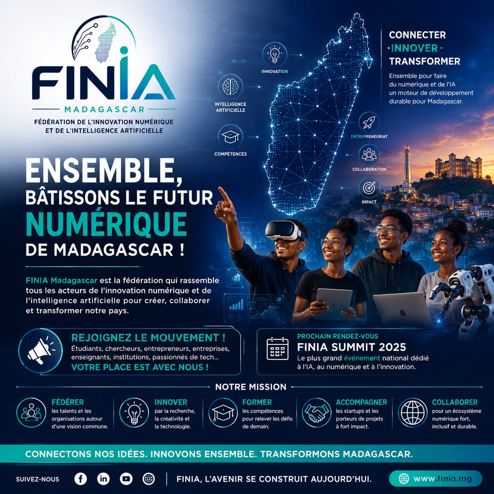

Connecter · Innover · Transformer
FINIA Madagascar
Une vitrine nationale pour fédérer l’innovation numérique, l’intelligence artificielle, la data et la cybersécurité au service d’un Madagascar plus agile, plus souverain et mieux connecté à ses citoyens.
- 27
- ministères ciblés
- 3 000
- agents à former
- 300
- sessions prévues

Programme national
Former le capital humain, digitaliser les institutions, accélérer le développement.
Le projet xN et la PNIC se complètent : l’un renforce les compétences numériques des institutions publiques, l’autre transforme les données citoyennes agrégées en signaux utiles à la décision.
Renforcement des capacités numériques
Former les cadres et techniciens publics à l’IA, la data, la cybersécurité, l’automatisation et les tableaux de bord décisionnels.
- 27 ministères couverts
- 3 000 agents publics formés
- 300 sessions de 5 jours
PNIC, intelligence citoyenne
Mesurer les préoccupations publiques, détecter les tendances émergentes et suivre l’impact des politiques grâce au NLP, au Big Data et aux agents IA.
- Opinion agrégée en temps réel
- Cartographie régionale des signaux
- Recommandations assistées et auditables
Écosystème d’innovation
Connecter les étudiants, chercheurs, entrepreneurs, institutions et startups autour d’une feuille de route commune pour Madagascar.
- Fédérer les talents et organisations
- Accompagner les porteurs de projets
- Créer des passerelles public-privé
Une identité visuelle forte
Un mouvement national, pas seulement une plateforme.
Le site reprend l’énergie des maquettes : carte connectée, lignes lumineuses, visuels humains, iconographie tech et tonalité institutionnelle ambitieuse.
Projet phare
PNIC : un radar stratégique pour comprendre l’opinion publique.
La Plateforme Nationale d’Intelligence Citoyenne analyse des tendances agrégées issues de sources publiques et volontaires pour éclairer les politiques publiques sans ciblage individuel.
Tableau de bord national
Analyse du jour
- Analamangavolume élevé
- Atsinananasignal négatif
- Boenyattente d’information
Écoute multi-sources
Réseaux sociaux publics, médias, blogs, forums, commentaires et enquêtes numériques.
IA et NLP multilingues
Sentiment, posture, extraction de thèmes, résumé automatique et détection de pics inhabituels.
Agent IA décisionnel
Rapports quotidiens, alertes intelligentes, questions-réponses et recommandations prudentes.
Éthique et confidentialité
Agrégation, anonymisation, seuils statistiques et absence de profilage individuel.
Impact attendu
Des institutions plus rapides, plus sûres et mieux informées.
La combinaison formation + plateforme d’intelligence citoyenne permet de moderniser les méthodes de travail, sécuriser les pratiques numériques et améliorer la prise de décision basée sur les données.
Rejoignez le mouvement
Connectons nos idées. Innovons ensemble. Transformons Madagascar.
FINIA Madagascar rassemble institutions, talents, chercheurs, entrepreneurs, enseignants et passionnés de tech autour d’un écosystème numérique fort, inclusif et durable.